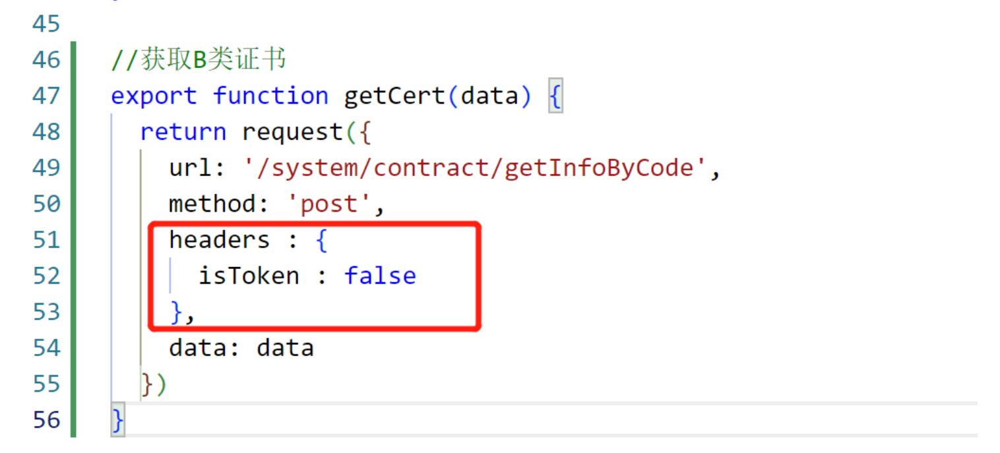

用若依遇到的一些问题记录
1.接口报错403
是由于token的问题。一边有token，一边没token。
第一种
api中加上header
1 | headers : { |

第二种
// 使用 permitAll() 方法所有人都能访问，包括带上 token 访问
.antMatchers(“/admins/**”).permitAll()
// 使用 anonymous() 所有人都能访问，但是带上 token 访问后会报错
.antMatchers(“/admins/**”).anonymous()
postman访问接口ok，是因为postman没token，前端报错403，是因为前端header带有token。
2.数据字典的用法
1 | import { getDicts as getDicts } from '@/api/system/dict/data' |
3.图片显示问题
1 | <img class="proBox-img" :src="url" > |